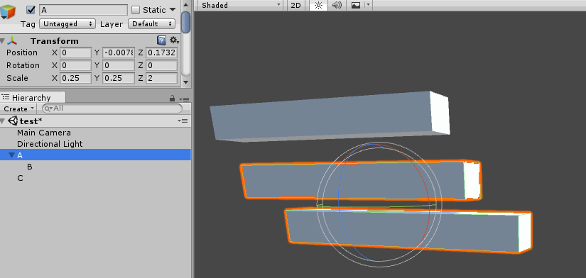

Conceptually, the easiest way to accumulate transforms is to concatenate their matrices. This is done by recursivley multiplying the matrix of every transform in a chain with the matrix of its parent. Engines like Unity, Gameplay 3D and Urho 3D work this way.
It's trivial to use an iterator to avoid recursion, the code below demonstrates how to combine transforms by recursivley combinng their matrices:
Matrix GetWorldMatrix(Transform transform) {
Matrix localMatrix = ToMatrix(transform);
Matrix worldMatrix = localMatrix;
if (transform.parent != NULL) {
Matrix parentMatrix = GetWorldMatrix(transform.parent);
worldMatrix = localMatrix * parentMatrix;
}
return worldMatrix;
}
On the surface, this code works as intended. However as soon as non-uniform scaling is introduced some unintended side effects start to show. Suppose we have transforms A, B and C, where B is a child of A. The relationship of the transforms is shown below:
Notice that A has non-uniform scaling. When we rotate B, instead of rotating, the object starts to skew. The following screenshot demonstrates this happening in Unity:

This is a common problem when accumulating matrices. There is no cheap or easy fix for this artifact. The skewing happens because the parents non-uniform scaling causes the basis of the child object to become non-orthogonal.
The only way to fix the skewing problem is to decompose the matrix into it's translation, rotation, skew and scale components, then recompose the matrix without skew data. I wrote a blog post on how to do just that.
Since each transform is represented in "local" space, relative to it's parent getting and setting local position / rotation / scale is trivial.